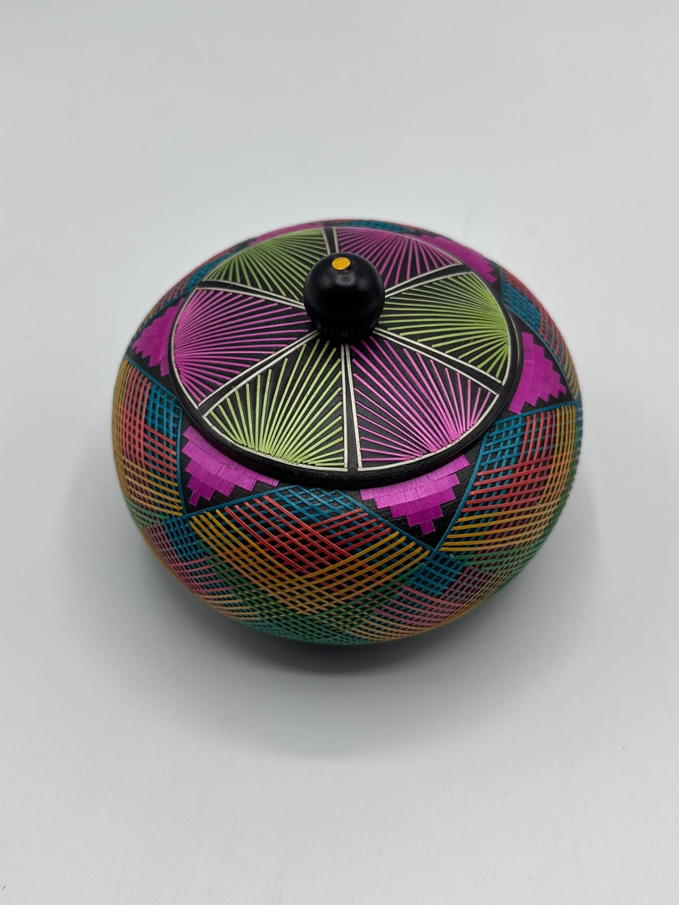

Wheat Straw Veneer (Tamo)
Wheat Straw Veneer is a traditional handicraft from Nariño that uses thin wheat straw fibers to decorate wooden pieces with intricate floral, landscape, and rural-inspired designs. Each handcrafted creation is unique and preserves the authenticity and cultural heritage of the region.